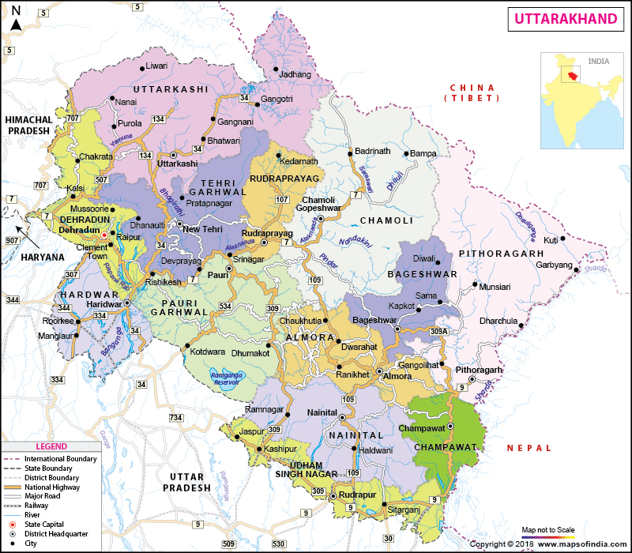

LET'S HAVE A LOOK AT THE TOUR MAP
BACK

WHERE TO VISIT , WHAT TO SEE?
SOME HOT PICKS(#HAVE_TO_VISIT)
- NAINITAL - CITY OF BEAUTIFUL LAKES , TEMPLES AND EXOTIC SCENERY
- RISHIKESH - CONVERGENCE POINT OF GANGA AND CHANDRABHAGA, ADVENTURE SPORTS , YOGA ASHRAMS
- AULI - DOTTED WITH APPLE ORCHARDS ,OAKS, DEODARS
- MUSSOORIE - COLONIAL HERITAGE AND RELIGIOUS SITES
- BADRINATH - NEELKANTH MOUNTAIN PEAK , AMONG ONE OF THE CHAR DHAM
- KEDARNATH - ONE OF THE CHAR DHAMS AND THE HOLIEST PILGRIM CENTER IN THE LAP OF THE GARHWALI DISTRICT, SPOT OF CHIPKO MOVEMENT
- JIM CORBETT NATIONAL PARK - PARADISE FOR FLORA AND FAUNA LOVERS
- HARIDWAR - FAMOUS FOR ITS TEMPLES GHATS WHERE PILGRIMS BATHE TO RELIEVE SINS
- YAMUNOTRI - ORIGIN OF THE YAMUNA RIVER , CHHOTA CHAR DHAM PILGRIM CENTER
- GANGOTRI - ACCORDING TO MYTHOLOGY THIS IS THE PLACE WHERE GANGA IS BELIEVED TO ORIGINATE FROM THE BRAIDS OF LORD SHIVA
- ALMORA - WILDERNESS OF THE HIMALAYAN RANGES, HORSE SHOE SHAPED HILL STATION
- VALLEY OF FLOWERS - WORLD HERITAGE SITE FOR ITS WILD UNTAMED BLOOMS SURROUNDED BY WHITE PEAKS
- DEHRADUN - SHIVALIK RANGES WITH TO PERENNIAL RIVERS, HISTORIC CIVILIZATION
- MUKTESHWAR - SMALL HILLY TOWN MOSTLY KNOWN FOR ADVENTURE SPORTS
- RANIKHET - QUENS FARM,DEVELOPED BY BRITISHERS IS FULL OF TEMPLES AND FORESTS
- LANDSDOWNE - PRISTINE HIMALAYAN BEAUTY, OAK TREES
- SATTAL - A GROUP OF SEVEN FRESH WATER LAKES, MIGRATORY BIRDS AND PANORAMIC VISTAS
- BHIMTAL - TEMPLES AMID THE PRISTINE BLUE LAKE
- MADHYAMAHESHWAR - SPIRITUAL VIBES OOZING OUT
- PITHORAGARH - SMALL URBAN TOWN WITH RAW BEAUTY OF NATURE OFTEN CALLED AS LITTLE KASHMIR
- RUDRA PRAYAG - CONFLUENCE POINT OF RIVER ALAKNANDA AND RIVER MANDAKINI
- DEV PRAYAG - CONFLUENCE POINT OF RIVER ALAKNANDA AND BHAGIRATHI
- BINSAR - LUSH GREEN OAK FOREST
- UTTARKASHI - CHIEF SOURCE OF THE HOLIEST RIVER OF HINDUISM, THE GANGA
SOME_OTHER_ATTRACTIONS
- DHANAUTI - OFFBEAT HILL STATION
- KANATAL - PEACE AND SOLITUDE FILLED HILL STATION
- TEHRI GARHWAL - SPIRITUAL SIGNIFICANCE
- RAJAJI NATIONAL PARK
- JOSHIMATH - QUAINT HILL STATION
- NAUKUCHITAL - SMALL VILLAGE WITH LAKES
- BAGESHWAR - UNTOUCHED VILLAGE DESTINATION
- KUMAON - HILL STATIONS AND RELIGIOUS SPOTS
- CHOPTA - TREKKER'S HEAVEN
- RAMGARH - SNOW COVERED HIMALAYAS
- DHARCHULA